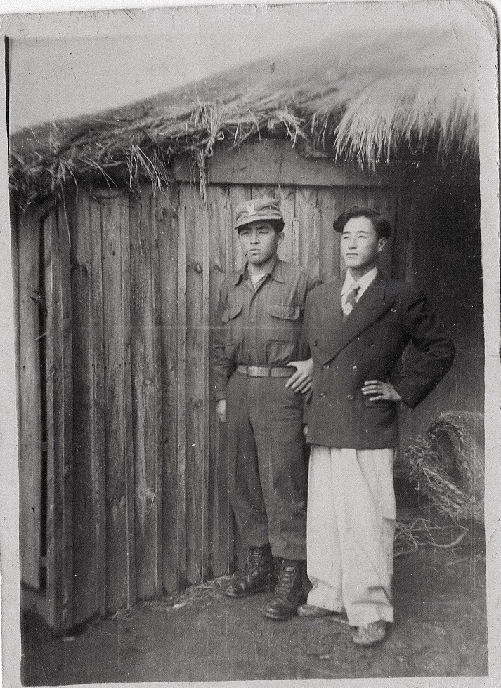
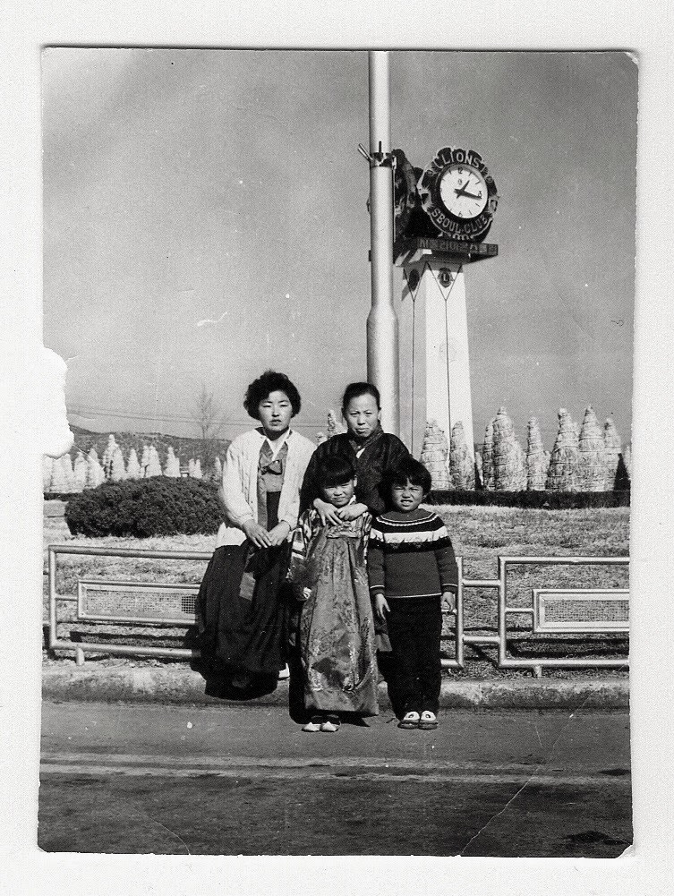
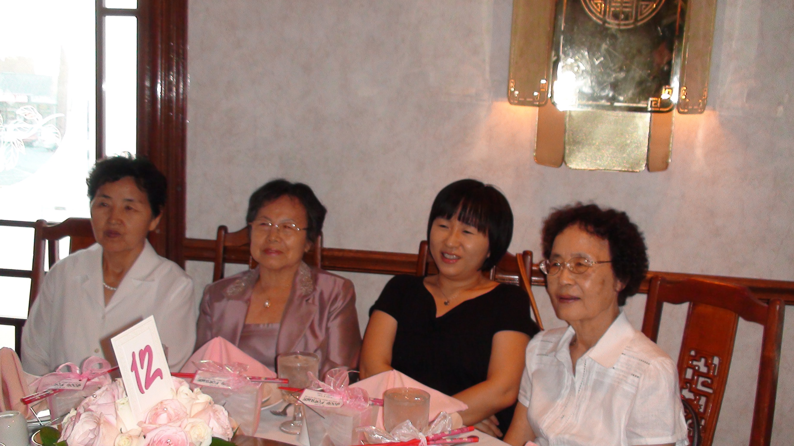

I have a number of 이모님들.
My mom had 4 younger sisters.
My Dad had 3 younger brothers.
He had only one sister.
고모님, 강금녀.
Growing up she lived close to us.
Because 고모님 got married earlier than my dad, her sons 복남, 복용 were a few years older than my sisters.
Her husband, also from Northern Korea, was the only one to escape to the South.

Consequently, we did many things as an extended family.
One time, three of us, my younger cousin, 인영, my sister and I were visiting 고모님댁
We tried to cross the railroad tracks while the train was approaching.

My sister was quick and she escaped angry train engineers.
인영 and I were captured and the train engineers called my mother and gave a stern lecture about taking care her children.1
Growing up, I often saw 고모님 and 할머님 together.
Not only did they look similar but they also lived close to one another and they did many things together.
고모님 attended all of the Kangs gatherings and functions.
When dad went to Vietnam, during the 60s, she went to the 김포 Airport.

When our family left for the United States, she came and supported us.
When we returned to Korea during the 90s, she was there to greet us.
고모님 moved to the United States in her later years. She was a faithful Christian till the end. Passed away on 26 April of 2017 Her 2 sons attended her memorial service.
When she passed away in Maryland, I didn’t have much information.
I began calling Korean churches, near her home.
At one of the churches a lady answered. She didn’t know my 고모님.
But her mother, who was listening, she knew our 고모님 through the Senior Citizen Center they both attended.
She told us where her church was. 세계장로 교회 of Gaithersburg, Maryland. I got to attend the church on Sunday and meet and thank her fellow church members.
The helpful lady’s church was nearby and I was able to see her and thank her in person.

I am grateful for the times and memories and the example of faith of 고모님.
Audio Recording of her life sketch (in Korean)
- Born on 25 October 1936
- @ 함경남도 안변군 신모면 이남리 47
- Passed away on 26 April 2017
Footnotes
This is my recollection of events. My mother and my sisters may have a different version of events.↩︎